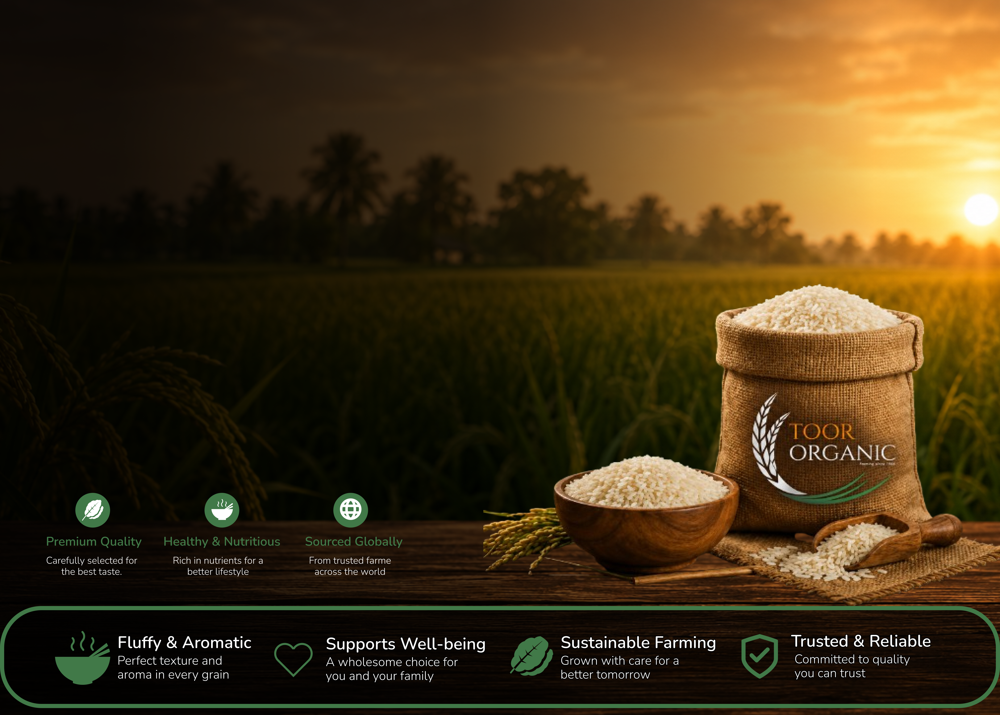
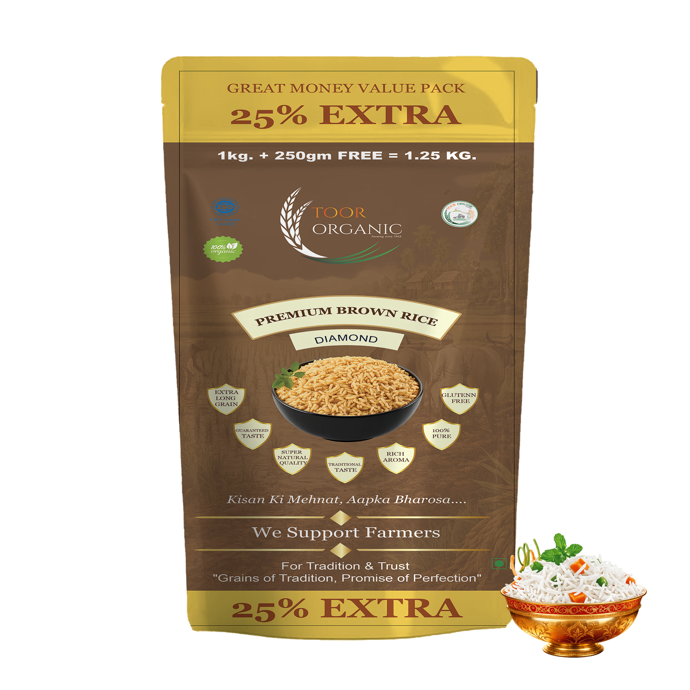

The Five-Ingredient Jeera Rice Our Farmers Make at Home
A dal-khichdi-table recipe passed down through three generations of rice growers in Punjab.
5 min read14 July 2026
.png)

Farming notes, recipes and the honest science of Basmati rice — written by the people who grow it, since 1965.
Inside the quiet warehouses of Zirakpur where a single grain of rice is left to rest for over a year before it ever reaches your kitchen — and why that patience is the real secret to a perfect biryani.
Read the Story.png)
A dal-khichdi-table recipe passed down through three generations of rice growers in Punjab.

Glycemic index, aroma compounds, and why long-grain aged rice digests differently.
We unpack the certification on our packaging — and what it means for what lands in your rice bag.

Sowing, monsoon, harvest, milling, aging — every stage that shapes the rice on your table.

The soaking time, water ratio and resting step most home cooks get wrong.

Fibre, aroma and cooking time — a practical comparison for everyday meals.
One message a week. No spam — just what's happening in the fields and in our kitchen.
Join on WhatsApp